Микроволновая печь BORK W702
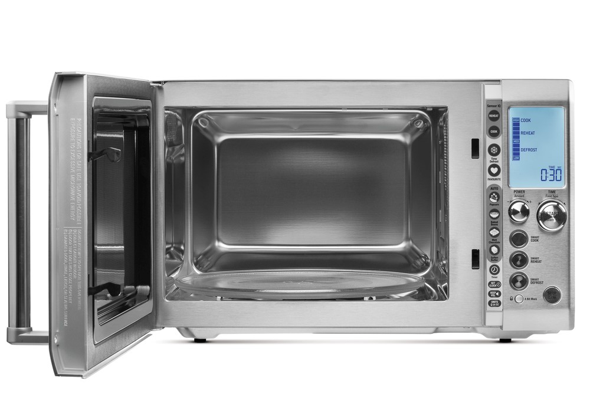Сервисные функции
Установка времени
Установка громкости сигналов
Установка единиц веса
Блокировка управления
Нажмите и удерживайте 3 секунды
Режим энергосбережения
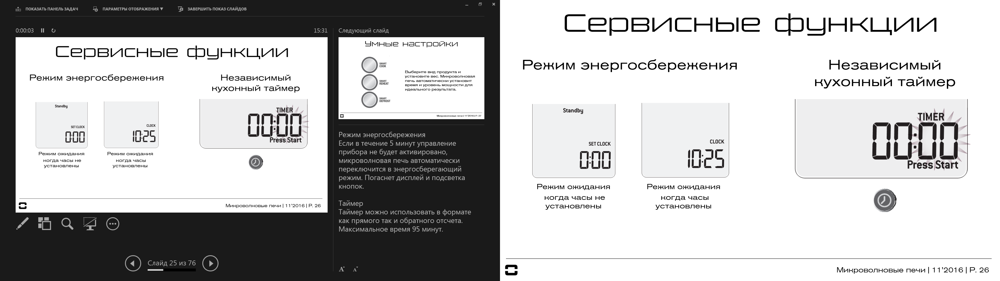Если в течение 5 минут управление прибора не будет активировано, микроволновая печь автоматически переключится в энергосберегающий режим. Погаснет дисплей и подсветка кнопок.
Независимый кухонный таймер
Таймер можно использовать в формате как прямого, так и обратного отсчета. Максимальное время 95 минут.
Умные настройки
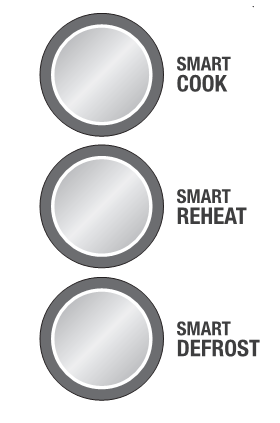Выберите вид продукта и установите вес. Микроволновая печь автоматически установит время и уровень мощности для идеального результата.
Динамическая настройка параметров
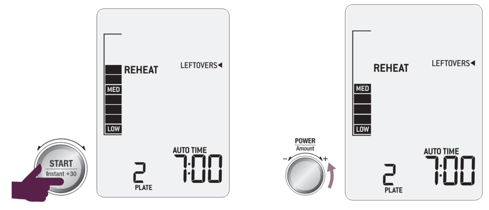Используя регулятор POWER/Amount, можно изменить уровень мощности и время в процессе приготовления/разогрева.
За исключением программ SOUP и PASTA&RICE в режиме SMART REHEAT (разогреве), и программ SOUP, RICE и OATMEAL в режиме SMART COOK (приготовления).
В режиме SMART DEFROST (разморозки) можно менять только настройки времени.
Smart cook
Potatoes (Картофель)
Порежьте картофель на кусочки по 30-40 грамм. Продукт должен быть комнатной температуры +20 градусов. Добавьте чайную ложку воды на 100 грамм картофеля. Накройте специальной крышкой, или салфеткой, или пластиковой пленкой с отверстиями. На половине приготовления, после звукового сигнала переверните продукт. По окончании приготовления, дайте картофелю постоять 5 минут. Картофель получается печёный.
Soft Vegetables (Мягкие овощи)
Программа для овощей таких как брокколи, зеленые бобы, цветная капуста, груши. Продукты должны быть из холодильника +5 градусов. Добавьте чайную ложку воды на 100 грамм продукта. Накройте специальной крышкой, или салфеткой, или пластиковой пленкой с отверстиями. На половине приготовления, после звукового сигнала переверните продукт. По окончании приготовления, дайте овощам постоять 5 минут. Овощи получаются, как на пару.
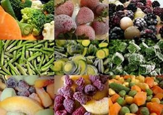Hard Vegetables (Твердые овощи)
Программа для овощей таких как морковь, кукуруза, картофель, свекла. Продукты должны быть из холодильника +5 градусов. Порежьте продукты. Добавьте чайную ложку воды на 100 грамм продукта. Накройте специальной крышкой, или салфеткой, или пластиковой пленкой с отверстиями. На половине приготовления, после звукового сигнала переверните продукт. По окончании приготовления, дайте овощам постоять 5 минут. Овощи получаются, как на пару.
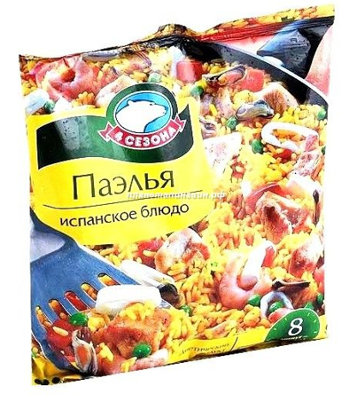Frozen Vegetables (Замороженные овощи)
Программа для замороженных овощей таких как морковь, брокколи, цветная капуста, груши. Продукты должны быть из морозильника – 18 градусов. Воды добавлять не нужно. Накройте специальной крышкой, или салфеткой, или пластиковой пленкой с отверстиями. На половине приготовления, после звукового сигнала переверните продукт. По окончании приготовления, дайте овощам постоять 5 минут. Овощи получаются, как на пару.
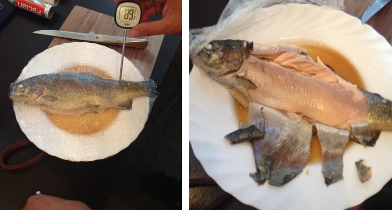Chicken (Курица)
Программа только для кусочков курицы. Не подходит для приготовления целой курицы. Продукты должны быть из холодильника +5 градусов. Курица будет готовиться эффективнее если куски располагать одним слоем. Большие куски располагайте дальше от центра поворотного стола. Накройте специальной крышкой, или салфеткой, или пластиковой пленкой с отверстиями. На половине приготовления, после звукового сигнала, переверните продукт. Если продукта более 1 кг. переверните дважды в процессе приготовления. По окончании приготовления, дайте курице постоять 5 минут. Курица получается тушеная в собственном соку.
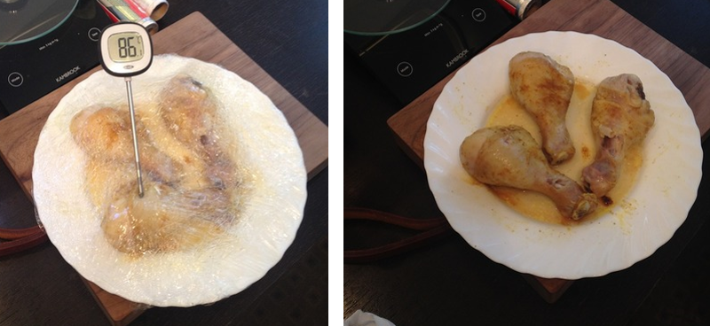Fish (Рыба)
Программа предназначена для нежного приготовления рыбы без пересушивания и подгорания краев. Подходит для филе и рыбы целиком. Продукты должны быть из холодильника +5 градусов. Располагайте рыбу одним слоем. Тонкий край филе оберните в фольгу, чтобы избежать подгорания. Накройте специальной крышкой, или салфеткой, или пластиковой пленкой с отверстиями. На половине приготовления, после звукового сигнала, переверните продукт. Филе очень мягкое. Переворачивайте аккуратно. По окончании приготовления, дайте рыбе постоять 5 минут. Рыба получается тушеная в собственном соку.
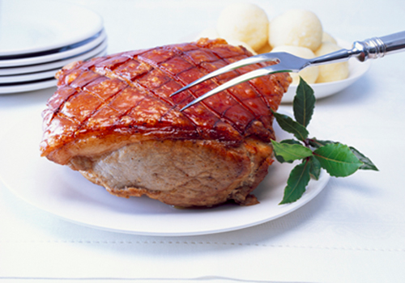Meat (Мясо)
Программа предназначена только для измельченного мяса (фарша). Продукты должны быть из холодильника +5 градусов. Накройте специальной крышкой, или салфеткой, или пластиковой пленкой с отверстиями. На половине приготовления, после звукового сигнала переверните продукт. Если продукта более 500 гр. переверните дважды в процессе приготовления. По окончании приготовления, дайте мясу постоять 5 минут.
Мясо получается тушеным в собственном соку.
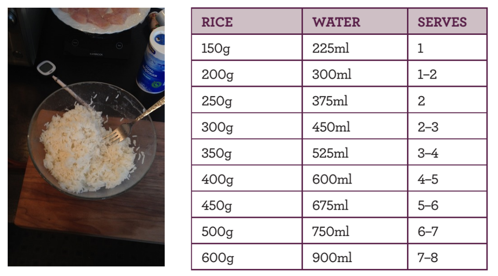Программа Рис
Программа рис - интеллектуальная программа с изменяемой мощностью. Сначала приготовление идет на 100% мощности, а потом снижается до 50%. Это гарантирует, что рис будет рассыпчатый и мягкий. Рис должен быть хорошо промыт. Используйте глубокую тарелку. Не накрывайте.
Добавляйте воду в пропорции 1/1,5. Используйте таблицу. По окончании приготовления, дайте блюду постоять 5 минут.
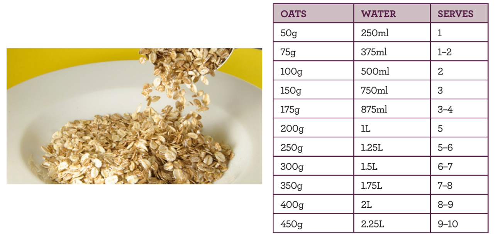Программа Овсянка
Программа подходит для овсяных хлопьев быстрого приготовления. Программа Овсянка - интеллектуальная программа с изменяемой мощностью. Сначала приготовление идет на 100% мощности, чтобы выделить крахмалы, а потом снижается до 50% для нежного приготовления. Используйте глубокую посуду. Не накрывайте. В середине приготовления после звукового сигнала, перемешайте. По окончании приготовления, дайте блюду постоять 2-3 минуты.
Добавляйте воду в пропорции 1 / 5. Используйте таблицу.
Smart reheat
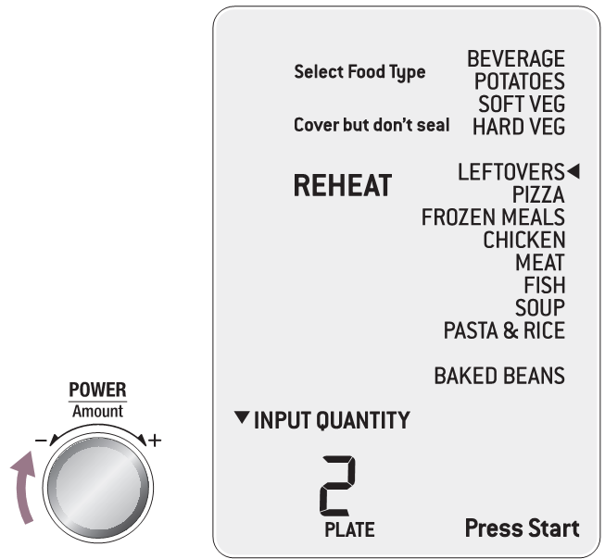Функция SMART REHEAT способствует мягкому разогреву ваших любимых блюд, исключает их высушивание и пережаривание
Beverage (Напитки)
Программа подходит для подогрева напитков таких как кофе и чай, которые остыли. Объем 200 мл, комнатной температуры (20 градусов).
Напитки подогреются до 60-65 градусов.
Potatoes (Картофель)
Программа подходит для подогрева холодного картофеля из холодильника (5 градусов).
Soft Vegetables (Мягкие овощи)
Программа подходит для подогрева мягких овощей из холодильника (5 градусов)
Pizza (Пицца)
Программа подходит для подогрева уже приготовленной пиццы из холодильника (5 градусов). Можно выбрать от 1 до 6 кусков.
Frozen Meals (Замороженная еда)
Программа подходит для подогрева замороженной еды из морозильника (-18 градусов).
Chicken (Курица)
Программа подходит для подогрева уже приготовленных кусочков курицы из холодильника (5 градусов).
Chicken (Курица)
Программа подходит для подогрева уже приготовленных кусочков курицы из холодильника (5 градусов).
Fish (Рыба)
Программа подходит для подогрева уже приготовленного рыбного филе из холодильника (5 градусов).
Leftovers (Остывшая еда)
Программа подходит для подогрева еды, которая остыла/хранилась в холодильнике. Объем 1 тарелка - 300 гр., из холодильника (5 градусов).
Pasta and Rice (Паста и рис)
Программа подходит для подогрева уже приготовленных риса или пасты из холодильника (5 градусов).
Soup (Суп)
Программа подходит для подогрева холодного супа из холодильника (5 градусов).
SMART DEFROST
Функция SMART DEFROST мягко размораживает мясо, птицу, рыбу и суп, для каждого из этих продуктов существует индивидуально разработанный алгоритм. Автоматически определяет время и мощность размораживания продукта, исключает высушивание.
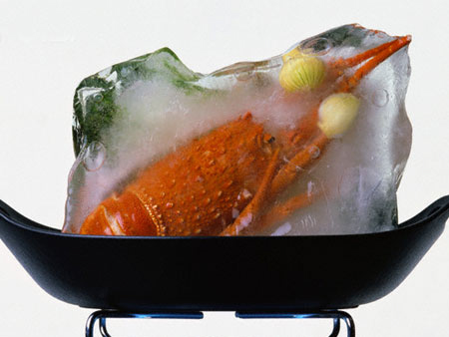Для лучшего результата
Время в программах рассчитано для хорошо замороженных продуктов, минимум 24 часа хранения в морозильной камере при -18 градусах. Всегда замораживайте мясо одним слоем не более 2 см. Чтобы разделить мясо или куски курицы перед заморозкой используйте пищевую пленку между слоями. После разморозки большинство продуктов будут еще твердыми в середине. Оставьте продукт на 15 – 30 минут для завершения размораживания.
Оберните тонкие концы курицы, стейков для предотвращения перегрева этих областей. Располагайте продукты одним слоем тонкими частями в центре, более крупными кусками с края поворотного стола. Удалите все упаковочные материалы.
A BIT MORE
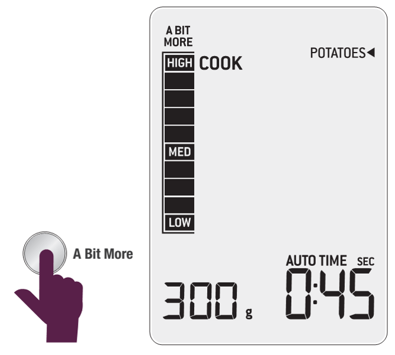Используйте функцию A BIT MORE когда приготовление закончено, а блюдо еще не до конца готово или не достаточно горячее. A BIT MORE может быть использована после любой программы. Настройки мощности сохраняются. Если не выполнялось никакой программы A BIT MORE добавит 20 секунд на 100% мощности.
IQ SENSOR
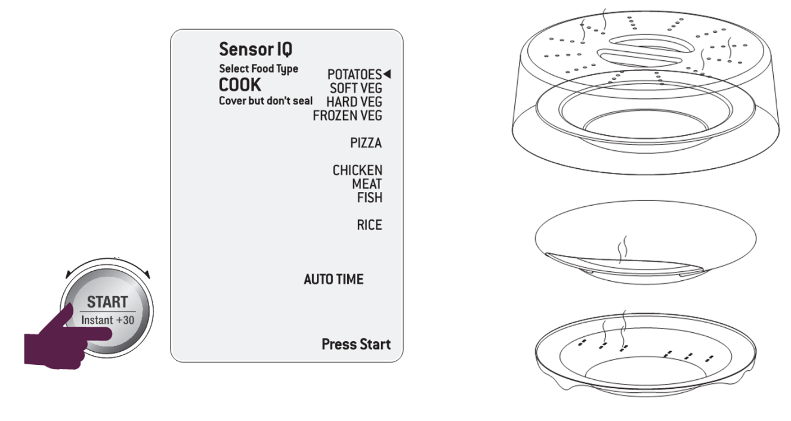Программа Sensor IQ позволяет разогреть или приготовить любое блюдо, нажав всего одну кнопку. Больше не нужно выбирать требуемую мощность и время.
Сенсорное приготовление.
Сенсор разработан для определения количества пара выделяемого продуктом во время процесса приготовления. Сенсор автоматически настроит время приготовления исходя из типа и количества продукта.
Для лучшего результата.
Не используйте программу сенсорного приготовления несколько раз подряд. Вы можете переготовить продукт.
Минимальное количество продукта 120 грамм.
Стенки контейнеров с продуктом и стенки микроволновой печи должны быть сухими.
Если требуется, прикрывайте продукты специальными крышками не плотно.
Сенсорный разогрев. Для лучшего результата.
Продукты должны быть из холодильника (5 градусов). Рекомендован для продуктов с большим содержанием жидкости (запеканки, супы, соусы…). Не подходит для выпечки, сырых продуктов, напитков, замороженных продуктов. Заполняйте посуду на ¾. Накрывайте блюдо, но не плотно!!! Перемешайте блюдо после извлечение из печи. Дайте блюду постоять 5 минут после окончания подогрева.
Дополнительные функции
Разморозка по времени
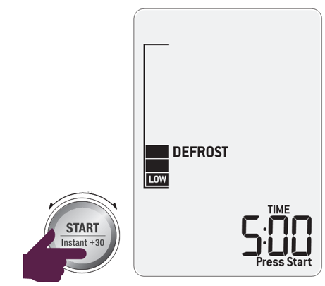Избранные программы
В избранном вы можете сохранить часто используемые режимы приготовления. Откройте дверцу и удерживайте кнопку FAVORITE 2 секунды. Нажимая кнопку избранного, на дисплее отобразится список сохраненных вами рецептов.
Попкорн
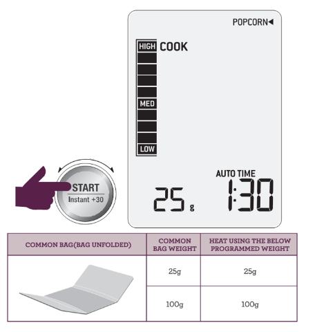Тушёные бобы
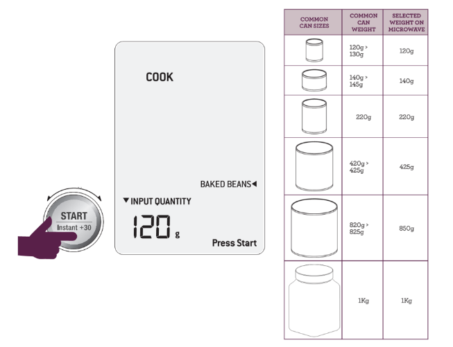Топлёный шоколад
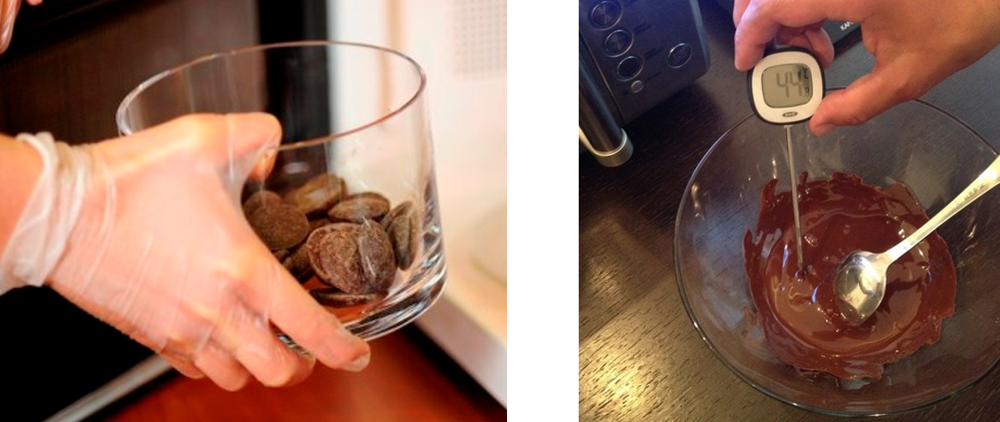Шоколад широко применяется в кулинарии. Его натирают и украшают им торты, пирожные и многие другие десерты, его растапливают на водяной бане и поливают ими всевозможные сладости. Шоколад используют и в качестве начинки для любой выпечки. А если говорить о нетрадиционных способах использования шоколада, то можно выделить приготовление соусов, даже к мясным блюдам.
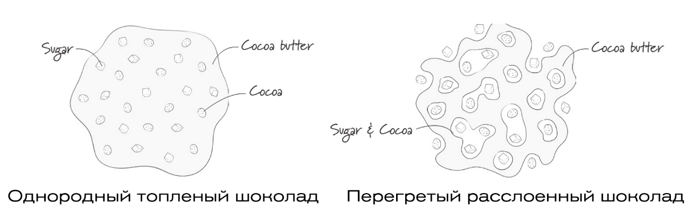При этом растопить шоколад очень сложно. Если нагревать и охлаждать шоколад без регулирования температуры, то кристаллизация какао-масла приведет к появлению кристаллов разных размеров. Для того чтобы избежать этого, шоколадные изделия подвергаются процедуре темперирования. Темперирование шоколада (или же кристаллизация) — это процесс нагревания/охлаждения до определенных температур. Благодаря этому масло какао затвердевает в определенной кристаллической структуре, которая сохраняет блеск и текстуру в течение длительного времени.
Программа Топленый шоколад тестировалась для темного шоколада. Если используете другой вид шоколада, проверяйте текстуру через небольшие интервалы времени во избежание перегрева. На середине времени перемешайте. В конце программы некоторые кусочки шоколада могут сохранить форму. Перемешайте до однородной густой консистенции.
Размягчённое сливочное масло
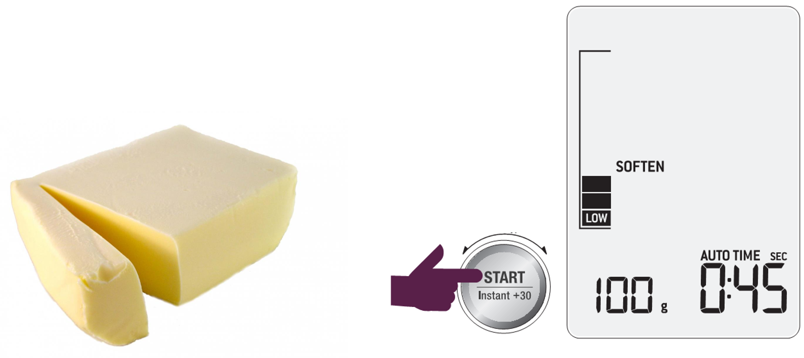Масло для бутербродов или выпечки можно легко и быстро размягчить в микроволновой печи. Однако не все печи могу обеспечить равномерный прогрев.
Идеальная настройка для получения мягкого масла, подходящего для перемешивания в миксере.
Масло должно быть из холодильника (5 градусов).
Масло становиться достаточно мягким и продавливается пальцем, но не должно таять.
Технические характеристики
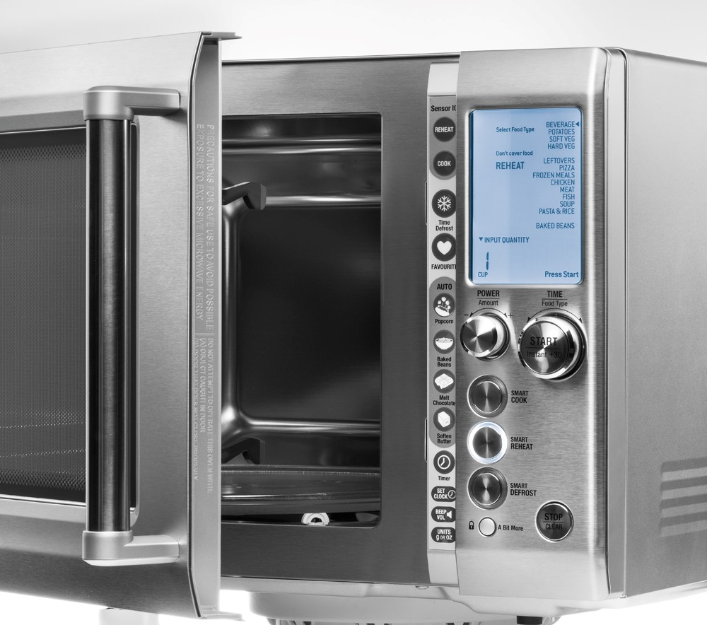
Рабочая частота: 2450 Мгц
Потребляемая мощность: 1500 вт
Выходная мощность: 1100 вт
Объем: 34 л
Габариты (В×Ш×Г): 314×519×418 мм
Вес: 16,15 кг